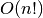
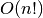

all_simple_paths¶
- all_simple_paths(G, source, target, cutoff=None)[source]¶
Generate all simple paths in the graph G from source to target.
A simple path is a path with no repeated nodes.
Parameters : G : NetworkX graph
source : node
Starting node for path
target : node
Ending node for path
cutoff : integer, optional
Depth to stop the search. Only paths of length <= cutoff are returned.
Returns : path_generator: generator :
A generator that produces lists of simple paths. If there are no paths between the source and target within the given cutoff the generator produces no output.
See also
all_shortest_paths, shortest_path
Notes
This algorithm uses a modified depth-first search to generate the paths [R201]. A single path can be found in
 time but the
number of simple paths in a graph can be very large, e.g.  in
the complete graph of order n.
time but the
number of simple paths in a graph can be very large, e.g.  in
the complete graph of order n.References
[R201] (1, 2) R. Sedgewick, “Algorithms in C, Part 5: Graph Algorithms”, Addison Wesley Professional, 3rd ed., 2001. Examples
>>> G = nx.complete_graph(4) >>> for path in nx.all_simple_paths(G, source=0, target=3): ... print(path) ... [0, 1, 2, 3] [0, 1, 3] [0, 2, 1, 3] [0, 2, 3] [0, 3] >>> paths = nx.all_simple_paths(G, source=0, target=3, cutoff=2) >>> print(list(paths)) [[0, 1, 3], [0, 2, 3], [0, 3]]